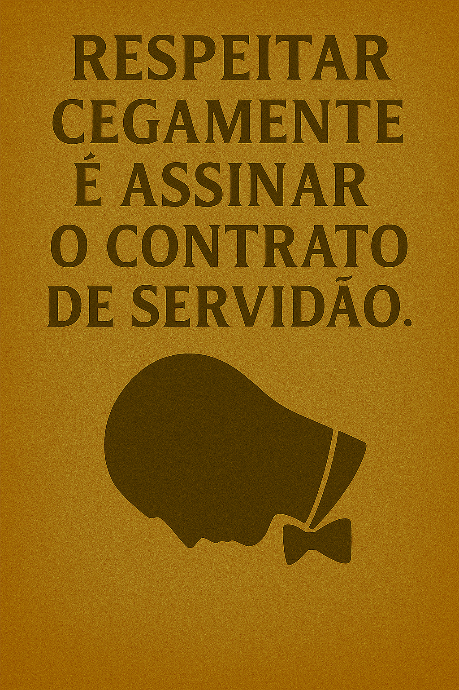

Publicado em 2025-05-23 12:59:27
Temos uma cultura construída com os seguintes pilares:
E assim, de respeitinho em respeitinho, lá vamos alimentando décadas de mediocridade com um sorriso e um fado triste de fundo.
Quando alguém como Paulo Morais — que combate a corrupção com coragem e lucidez — escreve todos os dias sobre os podres do regime, que faz o povo?
Não comenta, não partilha, não reflete. Porque pensar cansa. E pode dar chatices.
Desde pequenos que nos treinam:
O resultado? Um povo que aplaude quando o enganam com um novo plano fiscal.
Que sorri quando o governo diz que está tudo bem, mesmo com o frigorífico vazio.
E que só protesta... quando há bola ou reality shows.
Aqui vai uma regra de ouro:
Se queres ser ouvido em Portugal, nunca digas nada novo. E, se possível, elogia o sistema.
Se disseres que a democracia está capturada, que os partidos são clubes privados, ou que os impostos servem para manter a elite instalada — preparam-te logo uma camisa-de-forças intelectual.
Há os que escrevem.
Os que gritam.
Os que apontam o dedo.
E por isso mesmo, são empurrados para as margens da comunicação e da visibilidade.
Francisco Gonçalves, Paulo Morais, e tantos outros que ousam...
São os excêntricos da lucidez. Os teimosos da verdade.
E, na verdade, os únicos que ainda merecem ser lidos.
Portugal não precisa de mais respeitinho.
Portugal precisa é de insolência lúcida.
De crítica com coragem.
De pensamento que fure a bolha do silêncio.
Porque respeitar cegamente é só outra forma de assinar o contrato da própria servidão.
Autor : Augustus Veritas
Imagem cortesia de OpenAI (c)
Um desabafo sobre o silêncio que sufoca quem ousa pensar.
Uma reflexão sobre o ato de escrever num país que prefere calar.